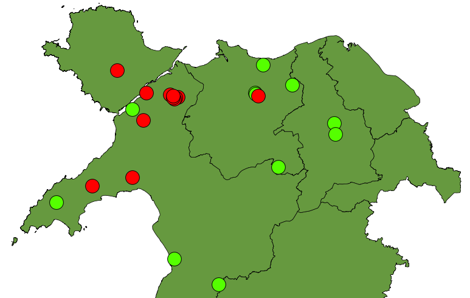

Sut rydyn ni’n defnyddio’r holiaduron...
amdana chdi yng ngogledd Cymru" />Mae'r holl atebion i'r cwestiynau yn yr holiadur yn cael eu trawsgrifio i greu cronfa ddata. Gellir defnyddio hyn er mwyn mapio atebion yr holl bobl a gymerodd ran a gweld patrymau daearyddol yn yr iaith heddiw. Er enghraifft, mae'r map ar y dde yn dangos dosbarthiad daearyddol amdana chdi ac amdanat ti. Mae'r smotiau coch yn cynrychioli pobl a ddefnyddiodd amdana chdi yn yr holiadur mewn ardal eang dros y gogledd-orllewin. Mae'r smotiau gwyrdd yn cynrychioli pobl a ddefnyddiodd amdanat ti. Mae'r ardal lle defnyddir amdana chdi wedi bod yn tyfu dros y ganrif ddiwethaf: does dim tystiolaeth o neb yn dweud amdana chdi cyn canol yr 20fed ganrif.
Wrth i fwy o bobl gymryd rhan, gallwn ni ehangu'r mapiau hyn gyda rhagor o bobl, a gobeithio gwelwn ni batrymau mwy cymhleth na'r un ar y map yma. Gan fod pobl o bob oedran yn cyfrannu at yr atlas, bydden ni'n disgwyl darganfod llefydd lle mae'r hen bobl yn dweud amdanat ti a'r bobl ifanc yn dweud amdana chdi. Hefyd gallwn weld effaith yr ysgolion, sy'n tueddu i ffafrio amdanat ti: ydy amdanat ti yn ymladd yn ôl, fel petai, mewn iaith pobl o gartrefi di-Gymraeg a gafodd eu haddygsu drwy gyfrwng y Gymraeg. Ond i weld patrymau fel hyn, dyn ni angen mwy o holiaduron nag sydd gyda ni ar hyn o bryd.
Newyddion a gweithgareddau
- Newyddion a gwybodaeth 'Oldest English words' identified
- 20th International Conference on Historical Linguistics (2011, Osaka)
- Darlithiau diweddar a darlithiau i ddod: